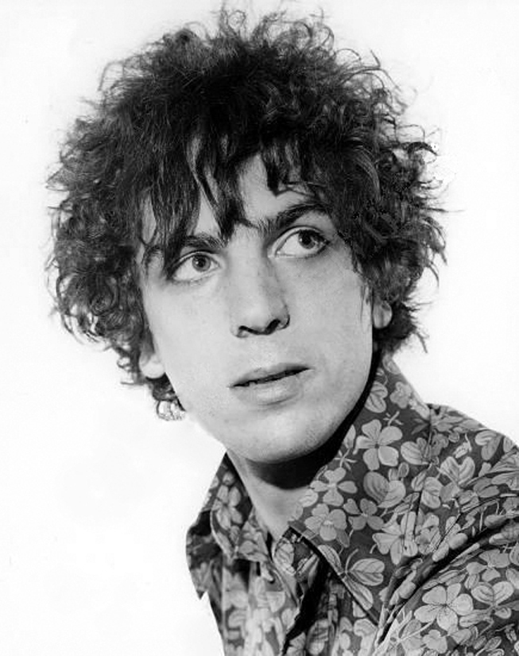
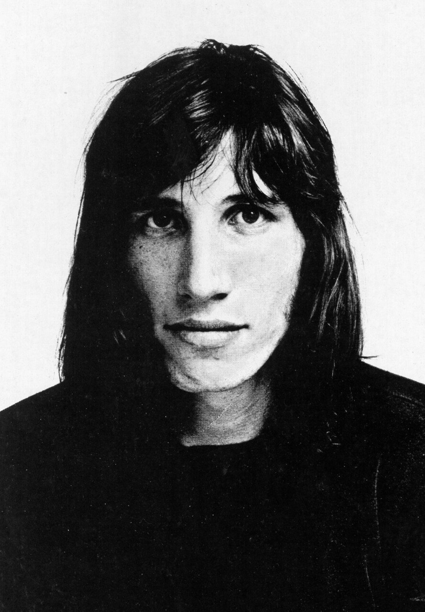
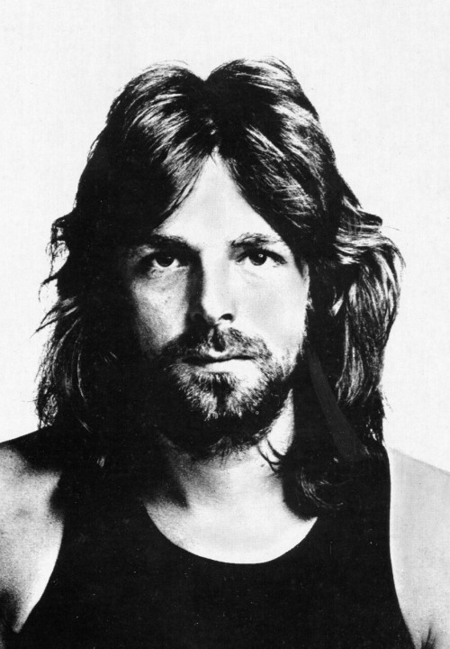
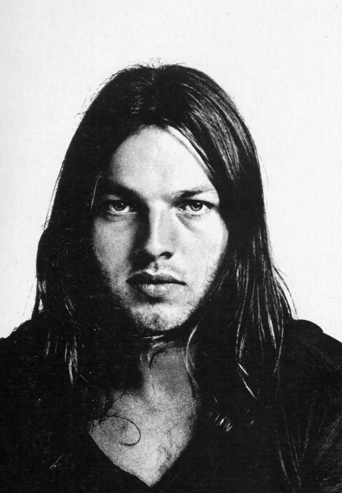
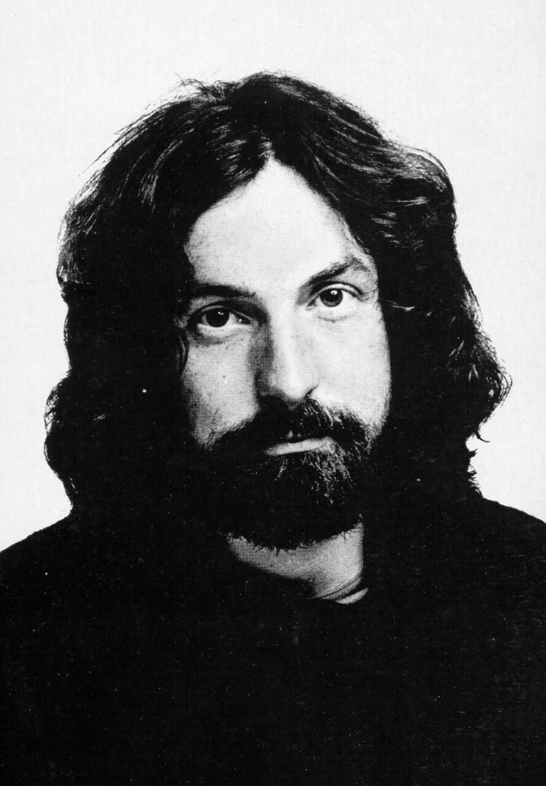
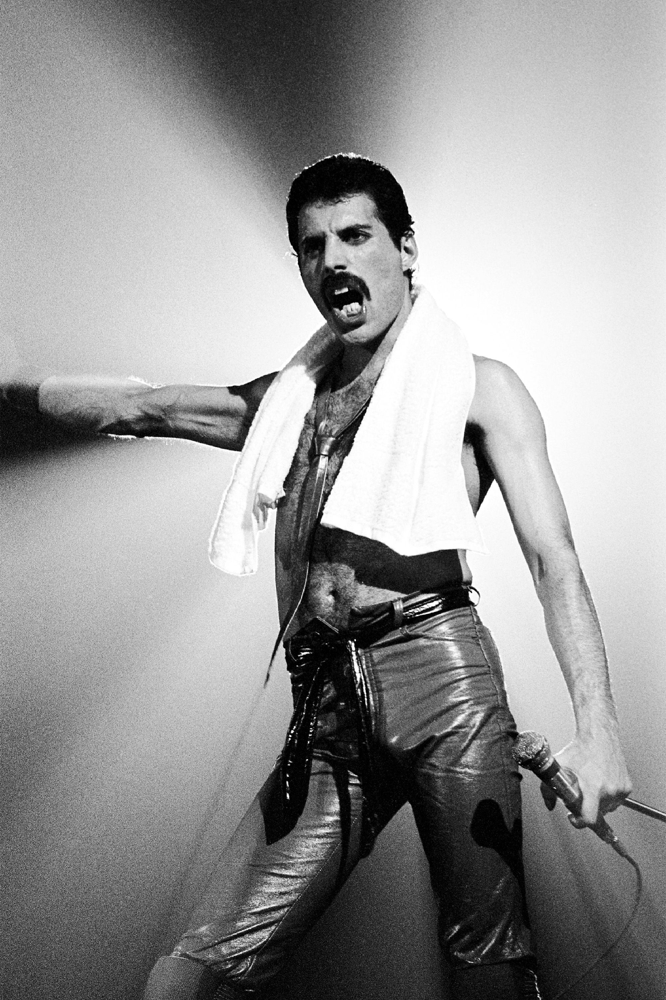
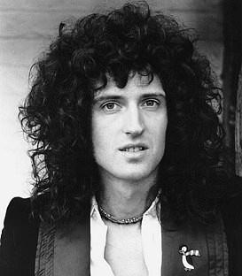
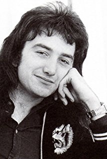
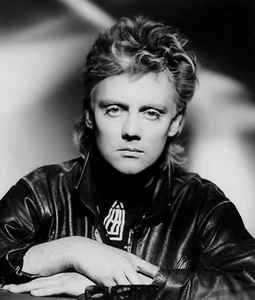

| Membre | Nom | Rôle |
|---|---|---|
|  | Syd Barrett | Guitariste, chanteur |
|  | Roger Waters | Bassiste, chanteur |
|
Son père, Eric Fletcher Waters, participe aux combats de la Seconde Guerre mondiale et est tué à Anzio, en 1944, au cours de l'Opération Shingle. Le traumatisme lié à la mort de son père marquera durablement ses compositions, en particulier sur les albums
The Wall (1979),
The Final Cut (1983) – qui lui est d'ailleurs dédié – et
Amused to Death (1992).
|
||
|  | Richard Wright | Claviériste |
|
Il jouait un rôle discret mais indispensable dans l'élaboration du son particulier du groupe. Il a participé à l'enregistrement de tous les albums de Pink Floyd sauf un
The Final Cut, ainsi qu'à toutes ses tournées.
|
||
|  | David Gilmour | Guitariste, chanteur |
|
David Gilmour rejoint le groupe Pink Floyd à la demande de Nick Mason le batteur, en janvier 1968, afin d'épauler sur scène Syd Barrett, un ami d'enfance avec qui il a commencé à jouer de la guitare et dont le comportement devient de plus en plus erratique. En avril 1968, David Gilmour remplace définitivement Syd Barrett qui, victime de troubles mentaux, est devenu incapable de jouer et de suivre le groupe.
|
||
|  | Nick Mason | Batteur |
|
Musicien le moins connu du groupe, Mason a néanmoins apporté beaucoup en termes de percussions et était, avec Waters, l'homme du triturage et du bidouillage des sons et des effets spéciaux. Il est le seul membre de Pink Floyd à avoir toujours été présent dans le groupe.
|
||
| Membre | Nom | Rôle |
|---|---|---|
|  | Freddie Mercury | Chanteur |
|
Avec une grande tessiture et une bonne maîtrise de quelques techniques d'opéra, il demeure parmi les plus grands chanteurs du XXe siècle, l'un des plus populaires et des plus techniquement accomplis. Il a été élu « Ultime Dieu du Rock » dans un sondage, sur une liste des 4 000 plus grandes figures du rock, devançant Elvis Presley de quelques voix. Sa performance avec le groupe Queen au Live Aid a été élu « meilleure performance live de tous les temps ». Il a composé avec Queen la plupart de ses grands succès, dont
Bohemian Rhapsody,
Somebody to Love,
We Are the Champions,
Don't Stop Me Now et Crazy Little Thing Called Love.
|
||
|  | Brian May | Guitariste |
|
Il compose beaucoup de succès de Queen (
We Will Rock You,
I Want It All, Save Me,
Who Wants to Live Forever,
Tie Your Mother Down,
Hammer to Fall,
White Queen (As it Began),
The Show Must Go On,
Now I'm Here, ou encore
No-One but You). Il utilise une guitare électrique qu'il a fabriquée lui-même, appelée
Red Special.
|
||
|  | John Deacon | Bassiste |
|
Il est l'auteur des hits
You're My Best Friend,
I Want to Break Free, ainsi que
Another One Bites The Dust (meilleure vente de single de Queen aux États-Unis),
Spread Your Wings ou encore
Back Chat. Il est également l'inventeur du
Deacy Amp. Des quatre membres du groupe, il fut le dernier à y adhérer mais aussi le plus jeune ; il avait seulement 19 ans quand il les rejoignit.
|
||
|  | Roger Taylor | Batteur |
|
Un peu en retrait par rapport à Freddie Mercury et Brian May, Roger Taylor n'en demeure pas moins un des facteurs importants dans la constitution du "son Queen", à la fois ample et sophistiqué. Il a écrit au moins une chanson sur chaque album de Queen. Il a également écrit quatre des hits du groupe :
Radio Ga Ga,
A Kind of Magic,
The Invisible Man,
These Are the Days of Our Lives,
Breakthru et
Heaven for Everyone.
|
||